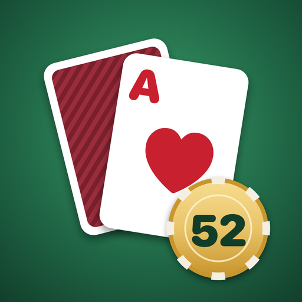
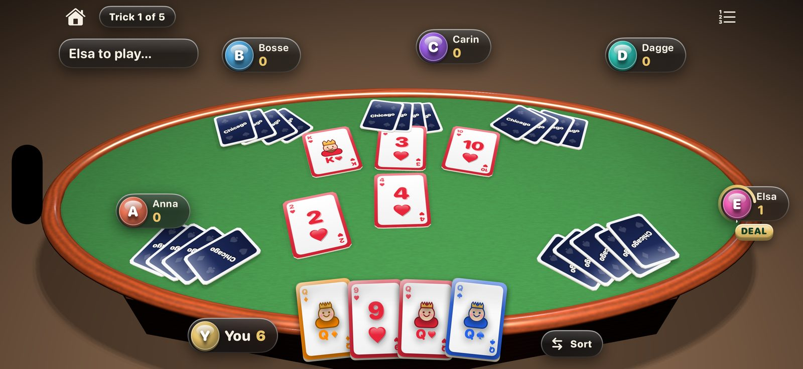
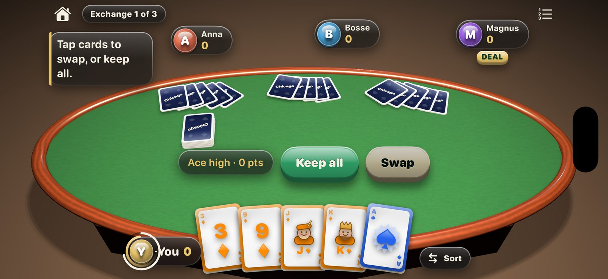
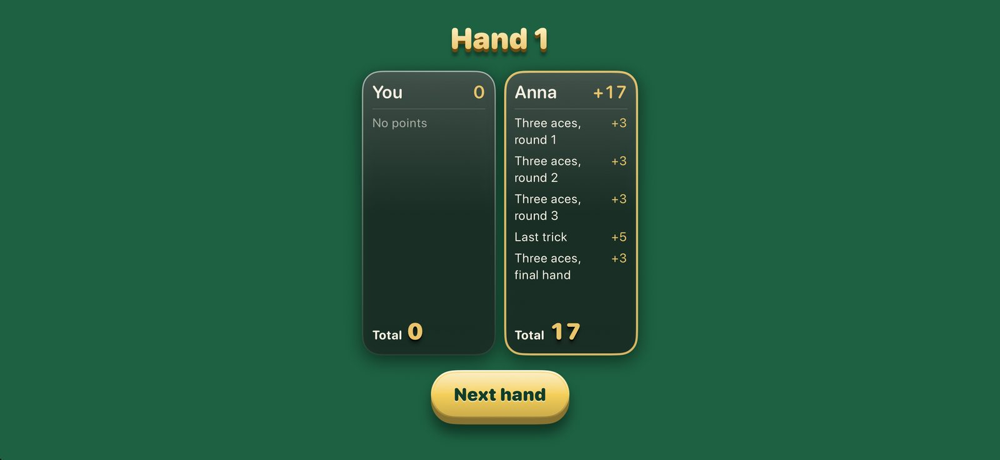
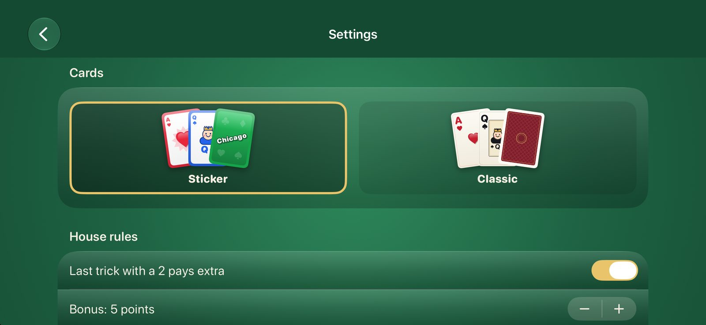
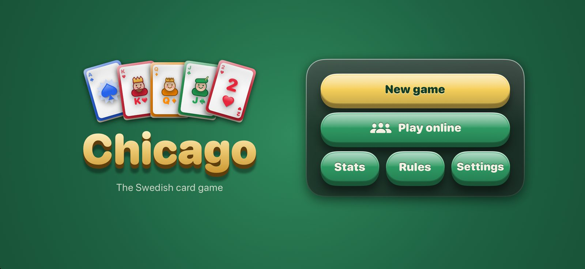

Chicago
The Swedish card game of poker hands, tricks and one big call.
Swap cards to build the best poker hand, fight for the last trick, or call Chicago and try to take all five. Play against computer players or with friends, first to 52 points wins.
Free for iPhone · No ads · No account · Plays offline
Take a seat
A real 3D card table, chunky cartoon cards and up to six players around the felt.





How Chicago plays
Chicago has been played around Swedish kitchen tables for generations. Each hand has three parts.
Poker
You get five cards and three chances to swap. After each round the best poker hand at the table scores, from 1 point for a pair up to 8 for a straight flush.
Tricks
Then play five tricks, following suit if you can. Whoever wins the last trick takes 5 points, and the best final hand scores once more.
Call Chicago
Sure you can take all five tricks? Call Chicago before the first one. Make it for 15 points, miss a single trick and lose 15.
First to 52 points wins. A royal flush wins on the spot.
Everything at the table
Computer players
Play against 1 to 5 opponents on Easy, Normal or Hard. Hard keeps track of every card played.
Play with friends
Join a table on the same Wi-Fi with no account at all, or play online through Game Center. Computer players fill any empty seats.
Original rules or House rules
Play the classic game, or the house variant with extra points for taking the last trick with a 2, a lockout at 47 points and more. Every house rule has its own switch.
Your game, your style
Pick bright Sticker cards or the Classic deck, rearrange your hand by dragging, and follow your wins, Chicagos and best hands in Stats.
Support
Found a bug, have an idea, or play by rules the app doesn't have yet? I'd love to hear from you.
Contact
Chicago is made by Magnus Cederberg, an independent developer in Sweden. I read every email.
mcederdev@gmail.comFor a bug, it helps to mention your iPhone model, your iOS version and what happened just before.
Which devices does Chicago run on?
iPhone, with iOS 17 or later. There is no Android version planned for now.
How do I play with friends?
Tap Play online. On the same Wi-Fi, one player hosts a table and the others join it from the list, with no account needed. Further apart, sign in to Game Center and invite friends or find players. The host's phone runs the game, and computer players take any empty seats.
Do I need an internet connection?
No. Games against computer players work fully offline. Only Game Center matches need the internet, and Wi-Fi tables need a shared local network.
Can I change the rules?
Yes. Choose Original rules or House rules when you start a game, and switch each house rule on or off in Settings. The Rules screen in the app explains every rule.
Where are my stats and saved game?
On your iPhone only. A game in progress is saved automatically, so you can pick it up later. Deleting the app also deletes your stats.
What data does Chicago collect?
None. There are no ads, no analytics and no accounts. The privacy policy has the details.